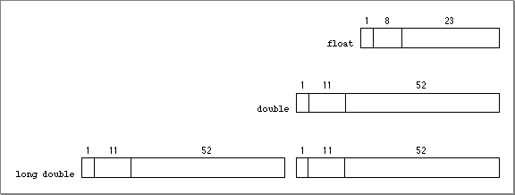

Floating-Point Data Formats
Figure E-1
Table E-1 Interpreting floating-point values If biased
exponent e is:And fraction f is: Then value v is: And class of v is: (any) [73] FP_NORMAL [74] FP_SUBNORMAL FP_ZERO FP_INFINITE FP_SNAN(first bit is 0)Floating-point data formats
Table E-2 Class and sign inquiry macros fpclassify(x) isnormal(x) isfinite(x) isnan(x) signbit(x) 